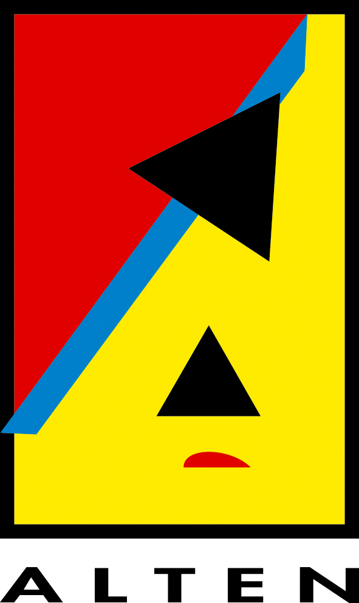
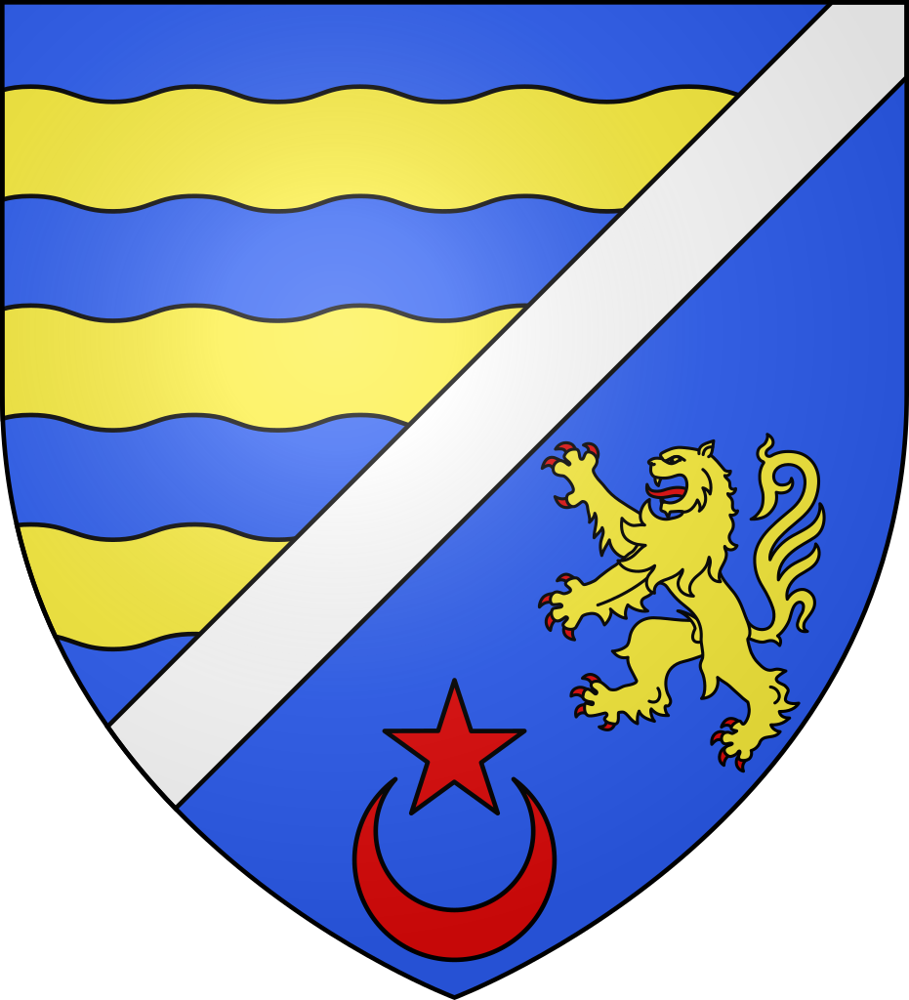
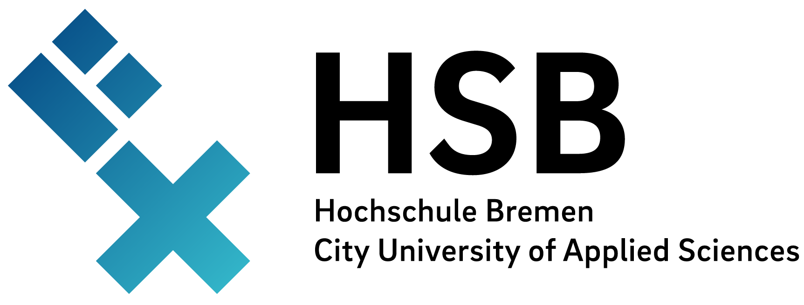
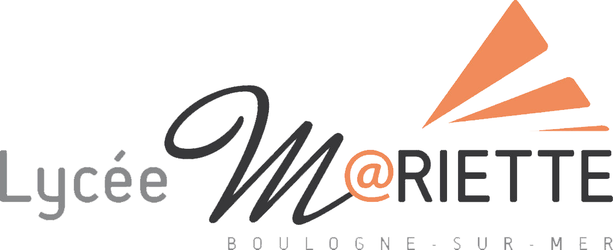
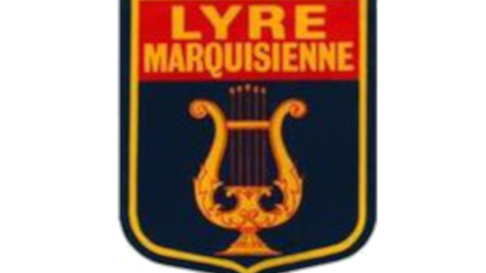

Accueil
Mon CV
Cours IPSA
Aéro 1
Aéro 2
Aéro 3
Mes documents
Blog
Me contacter
Alexandre Condette
Ingénieur développement logiciel chez
Spacebel
Alumni
IPSA
- Promotion 2020
Major de promotion Espace, Lanceurs et Satellites, option Systèmes embarqués (ELSS)
Langues maitrisées
Langue Maternelle
Courant (C1/C2)
Avancé (B2/C1)
Notions
Expérience Professionnelle
Ingénieur développement logiciel
Spacebel
- CDI
Septembre 2022 - Actuel
Labège, Occitanie, France
Gestion opérationelle des simulateurs numériques de satellites en orbite basse pour le
CNES.
Investigations de 1er niveau.
Recherches de pannes et réalisation de scripts en tcl/tk.
Réalisation d'essais et de maintiens de compétences.
Formation des ingénieurs bords à l'utilisation des simulateurs.
Connaissance des plateformes satellites et des charges utiles.
Développement de logiciels : Réalisation de conduites de tests et de conduites de scripts en Python - Qt.
Compétences : Technologie Spatiale, Python, Tcl/Tk, C, Qt, Bases de données, Test fonctionnels, Systèmes embarqués
Enseignant Vacataire
IPSA
- CDD
Novembre 2022 - Actuel
Toulouse, Occitanie, France
Enseignement pour les étudiants de 1ere année de cycle préparatoire intégré : PSpice.
Pour les étudiants de 2e année de cycle préparatoire intégré : Electronique Numérique: Algèbre de Boole, portes logiques, MOSFET, FPGA.
Pour les étudiants de 1e année de cycle ingénieur : Initiation aux bases de données relationnelles (SQLlite, MySQL).
Encadrement des Travaux Dirigés et Travaux Pratiques.
Participation active aux événements de l'école (Journée Portes Ouvertes notamment).
Les différents cours sont accessibles soit depuis
mon compte github
soit depuis
cette page.
Compétences : Bases de données SQL, Electronique Numérique, Réseau de portes programmables FPGA, Enseignement universitaire, Journées Portes Ouvertes
Ingénieur d'études valideur
CS Group
- CDI
Avril 2022 - Septembre 2022
Toulouse, Occitanie, France
Travail de recherche & développement sur les fonctions GNC (Guidage, Navigation et Contrôle) embarquées et autonomes dans les logiciels de vol de satellites.
Réalisation d'un état de l'art.
Cas d'études sur certaines fonctions GNC de restitution d'orbites et de maintien à poste.
Réalisation d'un librairie en C, intégrant des filtres de Kalman sans parfum (Unscented Kalman Filter) pour la restitution d'orbite.
Compétences : Intégration continue, Technologie spatiale, C, Systèmes Embarqués, Filtres de Kalman
Ingénieur d'études consultant

ALTEN SA
- CDI
Avril 2021 - Avril 2022
Bourges, Centre-Val de Loire, France
Mission chez le client
MBDA
à Bourges
Conception d'applicatifs de test : - Conception et développement d'ensembles programmes de test.
- Anaylse des spécifications.
- Analyse et prise en main de chaines fonctionnelles.
- Intégration et validation.
- Rédaction de la documentation associée à l'ensemble programme.
- Appliquer et respecter les méthodologies de développement et le porcessus sur les ensembles programmes.
- Assurer l'archivage et la gestion de configuration des programmes de test.
- Assurer le reporting auprès du hiérarchique.
Compétences : C, Systèmes d'exploitation temps réel, TestStand, LabWindows/CVI, tests fonctionnels
Ingénieur en instrumentation stagiaire
Centre de Physique des Particules de Marseille
- CDD
Février 2020 - Septembre 2020
Marseille, Provence Alpes Côte d'Azur, France
Stage de fin d'études, au sein du groupe RENOIR (Recherche de l'Energie Noire) / LISA (Laser Interferometer Space Antenna).
Définition et mise en oeuvre du contrôle-commande d'un banc de test interférométrique pour la mesure des ondes gravitationnelles dans le cadre de la mission spatiale LISA de l'ESA.
Contrôle des composants critiques du banc situé à l'APC de Paris depuis le CPPM via un LAN au Gbit/s.
Développement d'une interface graphique en Python 3 / Qt pour monitorer plus de 200 signaux.
Développement d'une interface web de monitoring à distance des signaux, via Grafana et une base de données InfluxDB.
Contrôle en puissance et fréquence des lasers, des moteurs piezzo-électriques des injecteurs (pour contrôler l'angle d'incidence du laser) et des thermistances pour régulation de la température des photodiodes du banc.
Traitement des signaux bruts en sortie des phasemètres en temps réel (100 Hz) pour en extraire la densité spectrale d'amplitude.
Compétences : C, Python, Qt, Base de données InfluxDB, Git, Interféromètrie, Matlab
Stage de technicien
Véolia Eau
- CDD
Juillet 2019 - Septembre 2019
Boulogne-sur-mer, Hauts de France, France
Stage de 4e année en qualité d'électrotechnicien.
Stage effectué au sein de l'agence Véolia de Boulogne-sur-mer (62).
Inventaire et test des conformités des machines sur le territoire :
- Contrôle de la conformité des machines avec organes en mouvement (+ 1500 machine à vérifier au total).
- Vérification de la sécurité électrique des équipements. - Inventaires des défauts éléectriques, mise en sécurité des équipements défaillant et signalement à l'entreprise SOCOTEC.
- Réalisation de rapports d'investigation et rapports de sécurité, enregistrés au niveau national.
- Travaux de maintenance divers sur différents site.
Compétences : Audit, Electricité, Environnement, Sécurité
Stage ouvrier

Mairie de Rinxent
- CDD
Juillet 2017 - Septembre 2017
Rinxent, Hauts de France, France
Stage ouvrier au sein de la municipalité de Rinxent (62).
Entretien et maintenance de bâtiments communaux, travaux dans les écoles, changement des serrures de la salle de sport municipale.
Réfection d'un stade de football communal : traçage du terrain, montage, installation et vérification des normes pour les cages de but, entretien de la pelouse, réalisation d'une dalle et pose de cabines et bancs pour les joueurs.
Réalisation du spectacle pyrotechnique du 14 Juillet : préparation des artifices, préparation du site de tir, montage des artifices et du matériel de sonorisation, tir et nettoyage du site après le spectacle.
Compétences : Pyrotechnie
Formation
IPSA Toulouse
Diplôme d'ingénieur IPSA, Ingénierie aérospatiale, aéronautique et astronautique
Septembre 2015 - Septembre 2020
Toulouse, Occitanie, France
Major de promotion 2020 dans la majeure Espace, Lanceurs et Satellites, option Systèmes embarqués.
Activités et associations :
- IPSA Jet, vice président de l'association sur le site de TOulouse de 2016 à 2018. Conception d'un micro-jet, responsable du pôle "Conception Assitée par Ordinateur" (CATIA V5). Réalisation de la structure de l'avion sur CATIA : Nervures, lisses, longerons de l'empenage et de la dérive ; cadres et lisses du fuselage.
- IPSA Musique : Trompette.
Hochschule Bremen

Master of Science, Aerospace Technologies
Septembre 2018 - Février 2019
Brême, Basse-Saxe, Allemagne
Semestre d'échange ERASMUS.
Cours suivis :
- Orbital Mechanics
- Satellite Communications
- Design and Modelling of Space Propulsion Systems
- Non-Chemical Space Propulsion Systems
- Spacecraft System Engineering and Design
- Unmanned Autonomous Vehicles
Lycée Auguste Mariette

Baccalauréat Scientifique, spécialité Physique-Chimie
Septembre 2012 - Juillet 2015
Boulogne-sur-mer, Hauts de France, France
Bac obtenu mention très bien.
Activités et associations :
Musique (Trompette)
Certificats & Formations
Artificier C4-T2 de niveau 1
Mai 2019 - Mai 2024
Préfecture du Pas-de-Calais, Hauts de France, France
Mise en oeuvre et utilisation d'artifices de divertissement de catégories
-
K4, C4
: Artifices de divertisseement présentant un danger élevé et qui sont destinés à être utilisés uniquement par des personnes ayant des "connaissance particulière" et dont le niveau sonore n'est pas dangereux pour la santé humaine.
-
T2
: Articles pyrotechniques destinés à être utilisés en scéne.
TOEIC Listening and Reading
Février 2019 - Février 2021
Obtenu lors de la formation IPSA, Toulouse, Occitanie, France
Résultat : 950 / 990 (Equivalent niveau C1)
Autres expériences
Trompettiste
Harmonie des Deux Rives
- 1e / 2e Trompette
Février 2019 - Février 2020
Paris 13e, Ile de France, France
1e et 2e trompette au sein d'un orchestre d'une soixantaine de musiciens.
Concerts dans de nombreux parcs et jardins parisiens.
Trompettiste

La Lyre Marquisienne
- 1e Trompette / Trompette Solo / Cornet / Bugle / Trompette Piccolo
Février 2019 - Février 2020
Paris 13e, Ile de France, France
1e et 2e trompette au sein d'un orchestre d'une soixantaine de musiciens.
Concerts dans de nombreux parcs et jardins parisiens.